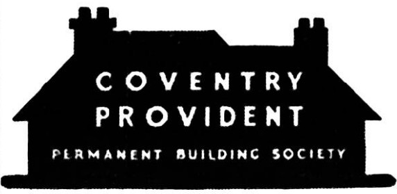

CoventryClick any card to explore that society's page.
Coventry Provident Permanent Building Society was formed in 1921 following the renaming of Coventry Provident Building Society. It was renamed Coventry Provident Building Society in 1962.
Last updated: 04/05/2026